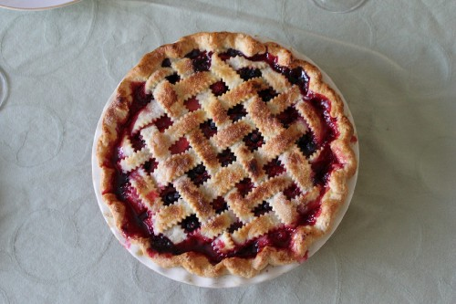

深度学习中Keras vs Pytorch
Jake G July 09, 2019 [编程] #深度学习 #Keras #Pytorch深度学习框架Keras与Pytorch的区别与优劣翻译
对于许多科学家，工程师和开发人员来说，TensorFlow是他们的第一个深度学习框架。 TensorFlow 1.0于2017年2月发布;但它对用户来说不是很友好。
在过去几年中，两个主要的深度学习库已经获得了巨大的普及，主要是因为它们比TensorFlow更容易使用：Keras和Pytorch。
本文将介绍Keras与Pytorch的4个不同点，以及为什么您可以选择一个库而不是另一个库。
Keras
Keras本身不是一个框架，但实际上是一个位于其他Deep Learning框架之上的高级API。目前它支持TensorFlow，Theano和CNTK。
Keras的优势在于它的易用性。它是迄今为止最容易去快速启动和运行的框架。定义神经网络非常直观，使用功能API允许人们将层定义为函数。
Pytorch
Pytorch是由Facebook的AI研究小组开发的深度学习框架（如TensorFlow）。像Keras一样，它也对深度网络编程中比较复杂的一大部分进行了抽象。
在高级和低级编码风格方面，Pytorch位于Keras和TensorFlow之间。你比Keras有更多的灵活性和控制力，但与此同时你不必做任何疯狂的声明性编程。
深度学习练习者整天都在争论应该使用哪个框架。一般来说，这取决于个人喜好。但是在选择时你应该记住Keras和Pytorch的一些特性。

(1)用于定义模型的 类(Pytorch) vs 函数(Keras)
要定义深度学习模型，Keras提供Functional API。 使用Functional API，神经网络被定义为一组顺序函数，一个接一个地应用。 例如，第一层的输出是第二层的输入。
=
=
=
=
在Pytorch中，您将网络设置为一个类，该类继承了Torch库中的torch.nn.Module。 与Keras类似，Pytorch为您提供了层作为构建块，但由于它们位于Python类中，因此它们在类的__init__()方法中引用，并由类的forward()方法执行。
=
=
=
=
=
return
=
因为Pytorch允许您访问所有Python的类功能而不是简单的函数调用，所以定义网络可以更清晰，更优雅地包含。 这真的没什么不好的，除非你觉得最重要的是尽可能快地编写代码，那么Keras会更容易使用。
(2)张量和计算图(Pytorch) vs 标准阵列(Keras)
Keras API对程序员隐藏了的许多复杂细节。定义网络层非常直观，默认设置通常足以让您入门。
只有当你需要实现一个相当尖端或"异国情调"的模型时，你才真正需要去了解底层的TensorFlow。
棘手的部分是，当你真正去了解底层的TensorFlow代码时，你将获得随之而来的所有非常具有挑战性的部分！ 您需要确保所有矩阵乘法都排成一行。 哦，甚至不要去考虑尝试打印出图层的一个输出，因为您只能在终端上打印出一个漂亮的Tensor定义。
Pytorch在这些方面倾向于更加方便。 您需要知道每个层的输入和输出大小，但这可以很快掌握。 您不必处理构建一个您无法在调试中看到的抽象计算图。
Pytorch的另一个好处是你可以在Torch Tensors和Numpy阵列之间来回滑动。 如果你需要实现自定义的东西，那么在TF张量和Numpy阵列之间来回转换可能会很麻烦，需要开发人员对TensorFlow的Session有充分的了解。
Pytorch的交互性比想象中要简单得多。 您只需要知道两个操作：一个将Torch Tensor（一个Variable对象）转变到Numpy，另一个是相反的转换。
=
= #tensor 变为numpy
# numpy 变为tensor
当然，如果你不需要实现任何花哨的东西，那么Keras会做得很好，因为你不会遇到任何TensorFlow障碍。 但如果你这样做，那么Pytorch可能会更顺畅。
(3) Training models
在Keras训练模型非常容易！ 只是一个简单的.fit()函数，你可以很轻松的进行训练。
=
在Pytorch中训练一些模型需要一些步骤
- 每一批次的训练开始时初始化梯度
- 在模型中运行前向传播
- 运行后向传播
- 计算损失和更新权重
所以，就训练模型来说，PyTorch 较为繁琐。
# loop over the dataset multiple times
= 0.0
# Get the inputs; data is a list of [inputs, labels]
, =
# (1) Initialise gradients
# (2) Forward pass
=
=
# (3) Backward
# (4) Compute the loss and update the weights
(4)控制 CPU vs GPU 模式
如果你已经安装了 tensorflow-gpu，则在 Keras 中能够使用 GPU 并且会默认完成。然后，如果你想要将某些运算转移至 CPU，则可以以单行方式完成。
=
但对于 PyTorch 来说，你必须显式地为每个 torch 张量和 numpy 变量启动 GPU。这样代码会比较混乱。并且如果你想在 CPU 和 GPU 之间来回移动以执行不同运算，则很容易出错。
例如，为了将之前的模型转移到 GPU 上运行，则需要以下步骤：
# Get the GPU device
=
# Transfer the network to GPU
# Transfer the inputs and labels to GPU
, = ,
因而，Keras 在简洁性和默认设置方面优于 PyTorch。
选择 Keras 或 PyTorch 的一般性建议
作者通常建议初学者从 Keras 开始。Keras 绝对是理解和使用起来最简单的框架，能够很快地上手运行。你完全不需要担心 GPU 设置、处理抽象代码以及其他任何复杂的事情。你甚至可以在不接触任何 TensorFlow 单行代码的情况下，实现自定义层和损失函数。
但如果你开始深度了解到深度网络的更细粒度层面或者正在实现一些非标准的事情，则 PyTorch 是你的首选库。使用 PyTorch 需要进行一些额外操作，但这不会减缓你的进程。你依然能够快速实现、训练和测试网络，并享受简单调试带来的额外益处。